Willkommen auf der besten Cocktail Webseite, die Du je gesehen hast!
Designed and created by Sonbre

Drinks
1. Vodka Tonic
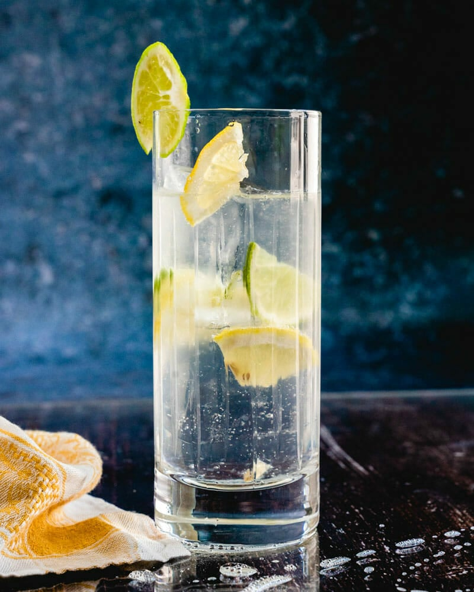
Ein erfrischendes und leicht bitteres Getränk mit einem spritzigen Hauch von Limette.
Wodka, Tonic, Limette, Eis
2. Classic Vodka Martini
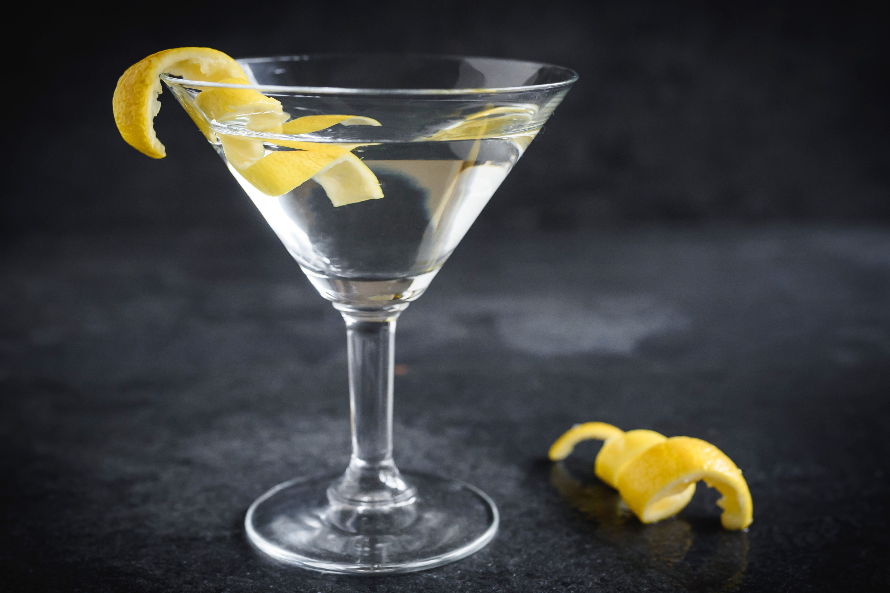
Trocken und kraftvoll, mit einer subtilen, leicht würzigen Note.
Wodka, trockener Wermut, Zitronenzeste oder Olive
3. Moscow Mule
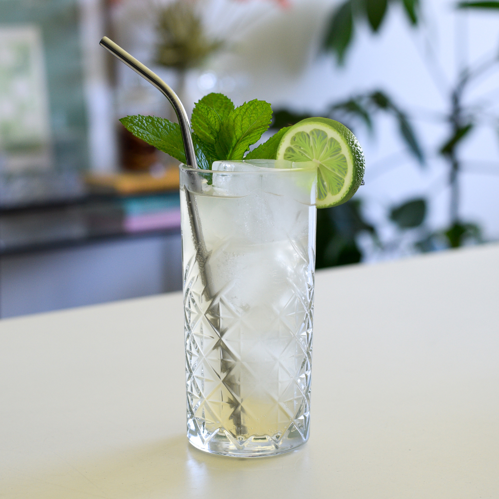
Scharf und erfrischend, mit einem kräftigen Ingwer- und Limettengeschmack.
Wodka, Limettensaft, Ginger Beer, Limettenscheibe, Eis
4. Screwdriver
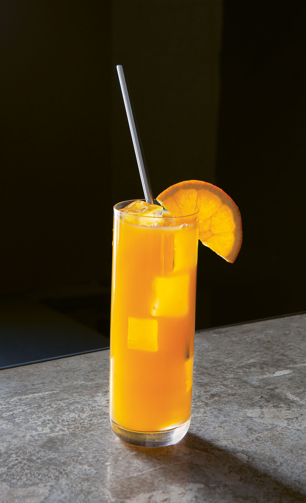
Fruchtig und süß, mit der sanften Säure von frischem Orangensaft.
Wodka, Orangensaft, Orangenscheibe, Eis
5. Cosmopolitan
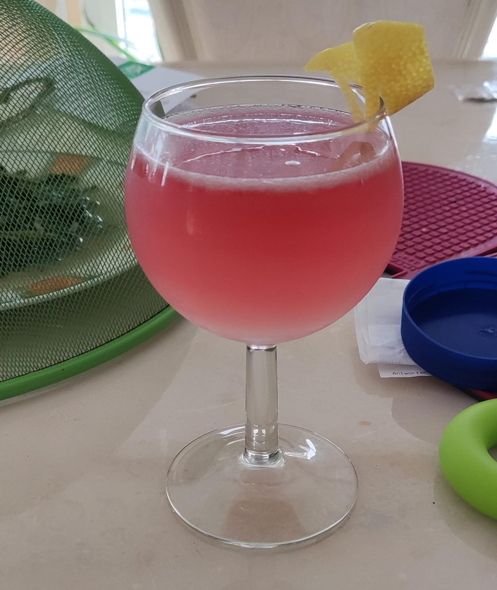
Leicht süß und sauer, mit einem frischen Cranberry- und Zitrusgeschmack.
Wodka, Cranberrysaft, Limettensaft, Triple Sec, Limettenzeste
6. Cape Codder
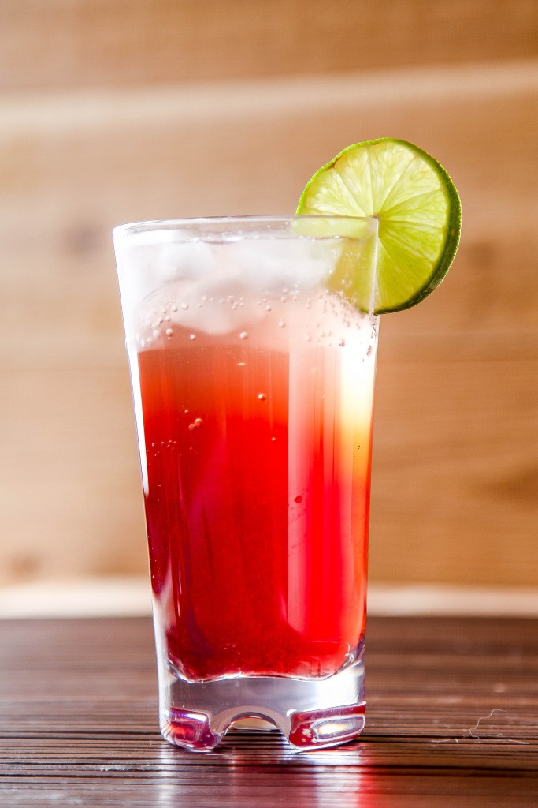
Fruchtig und leicht herb, mit einer angenehmen Mischung aus Cranberry und Limette.
Wodka, Cranberrysaft, Limettenscheibe, Eis
7. Vodka Lemonade
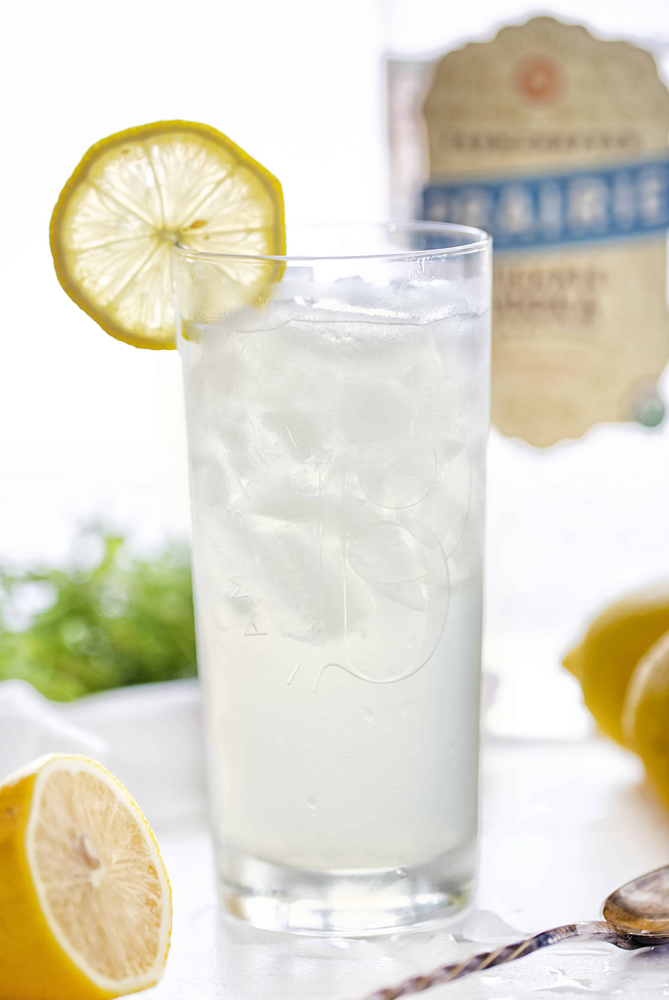
Erfrischend süß-säuerlich, perfekt für einen heißen Sommertag.
Wodka, Limonade, Zitronenscheibe, Eis
8. Vodka Collins
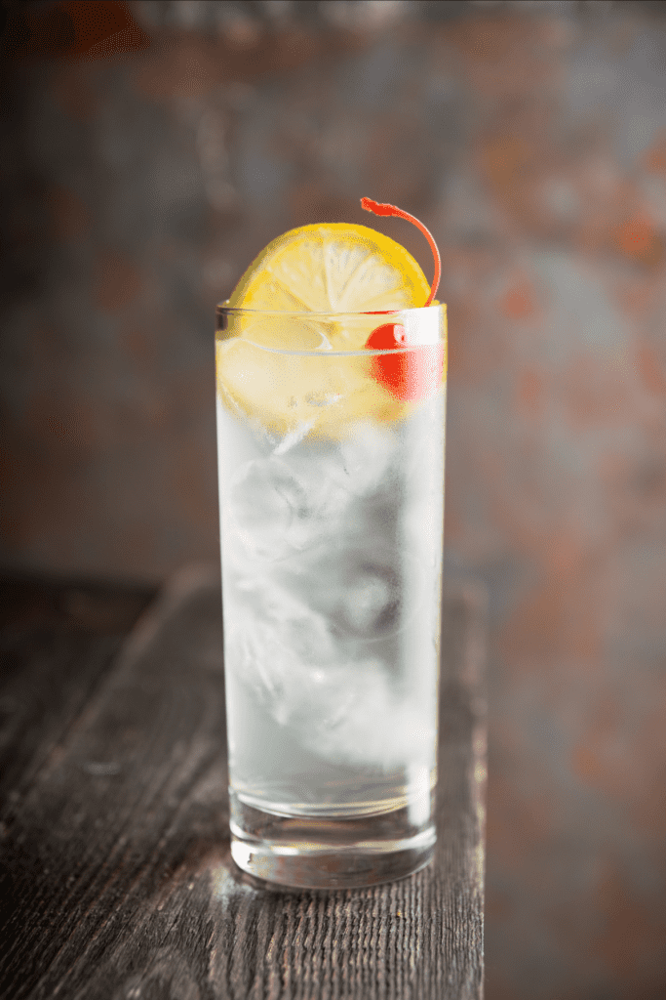
Spritzig und zitronig, mit einem Hauch von Süße und einem prickelnden Finish.
Wodka, Zitronensaft, Zuckersirup, Sprudelwasser, Eis
9. Blue Lagoon
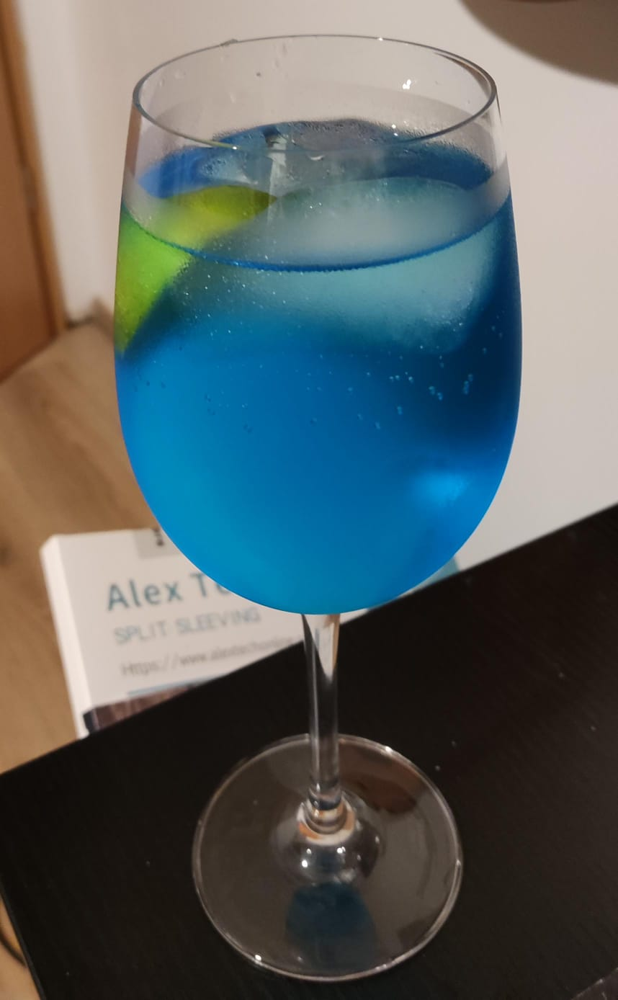
Süß und spritzig, mit einem erfrischenden Zitrusgeschmack und einer leuchtend blauen Optik.
Wodka, Blue Curaçao, Limonade, Zitronenscheibe, Eis
10. Blue Cosmopolitan
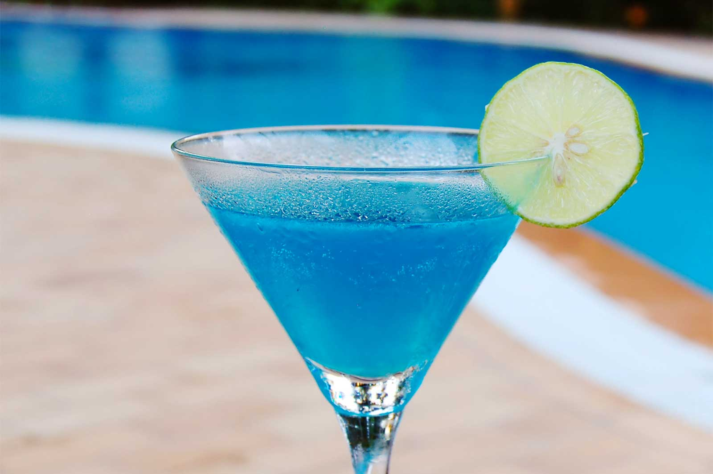
Der Blue Cosmopolitan kombiniert erfrischende Limette mit samtiger Süße und lebendigen Zitrusaromen für einen ausgewogenen, eleganten Geschmack..
Wodka, Blue Curaçao, Limettensaft, Triple Sec, Cranberrysaft (optional), Eis
11. Salty Dog
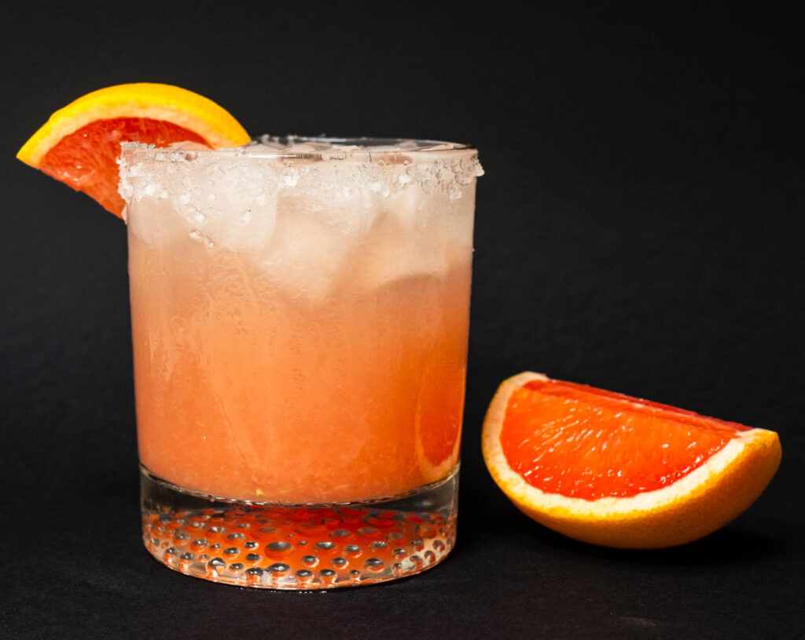
Der Salty Dog vereint die herbe Frische von Grapefruit mit der würzigen Salznote, veredelt durch die feine Schärfe von Gin oder die milde Klarheit von Wodka..
Wodka, Grapefruitsaft, Salz am Glasrand, Eis